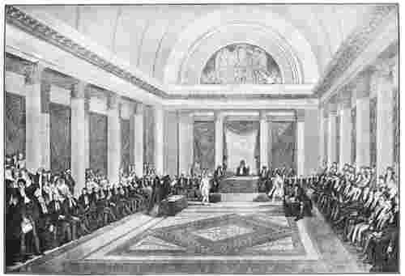
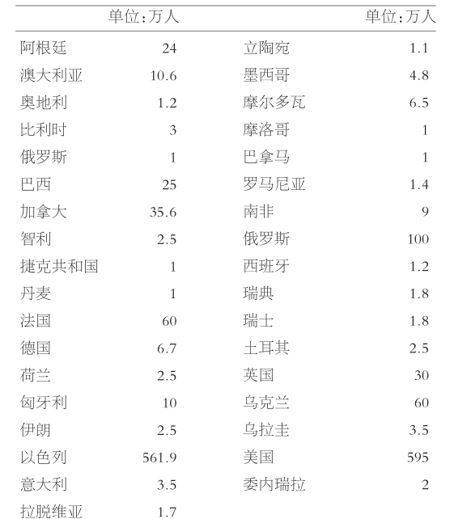

西红杮是水果还是蔬菜？无疑，植物学家说是水果，厨师说是蔬菜。西红杮自己有何话要说呢？它要是想过这个问题，也许就像犹太人一样，会感到相同的身份危机。只要人们想给犹太人戴上个名头，一个种族、一个民族，或者一种宗教，这种危机就很容易出现。不管是西红杮，还是犹太人，就其本身来说都不是那么错综复杂，那么含糊不清。但是，或水果、蔬菜，或民族、宗教，这类范畴对于其他食品和其他人群非常适用，用于西红杮或犹太人则不那么恰到好处。
大街上撞见一位犹太人，你如何认得出来？犹太人中，有白人也有黑人，有西方人也有东方人，有生来就是的也有后来皈依的，有笃信各种宗教的也有无神论者和不可知论者，有什么办法对他们进行总体概括吗？犹太人总共有多少？他们生活在哪里？
犹太人的身份问题是新出现的，这让人有些意外。说起来，在中世纪的基督教世界中，这不是个问题。人们知道 犹太人是怎么回事。犹太人是一个“特殊的民族”，是“上帝的选民”，如《圣经》里所说，他们是上帝选来传达启示的。但他们舍弃了耶稣，因而受到指责和诅咒，身份卑微，一直等到适当的时机，他们才会接受耶稣为救世主。中世纪晚期，基督教的预言自我实现了；基督教徒借助于政治权力，按照预言，真正地贬低了犹太人的社会地位。犹太人被限定在聚居区，被迫穿上显眼的服装，被排除于各种行会、职业之外，不得拥有土地，在布道会上被诽谤为杀害基督的凶手，被控井中投毒（14世纪黑死病时期）、亵渎圣体，被控杀害基督教徒的孩子并用他们的血过逾越节（即所谓“血诬案”），被控一个心存偏见的人所能强加到异族人头上的几乎每一种恶行。
看一看基督教，尤其是西方基督教宗教艺术中描述犹太人的方式，就很能说明问题，也相当令人震惊。12世纪之前，犹太人在体貌特征上与其他民族没有区别。后来，突然发生了变化，欧洲宗教艺术中的犹太人成了鹰钩鼻子、蹼足，只要人们认为属于恶魔面相的特征，都会出现在犹太人身上；甚至到了20世纪，欧洲还有一些地区的民间坚信犹太人长角。其中的原因当然不是因为犹太人在12世纪神不知鬼不觉地变了长相、到现在又改回来，而是因为，基督教的肖像画明确杜撰了犹太人与魔鬼之间的结盟。
甚至在启蒙运动的冲击下那个艺术体系崩溃之后，产生于中世纪“基督教世界”的老套路仍然持续了一段时间。就连伏尔泰这样的启蒙运动倡导者，也视犹太人为被上帝摈弃的民族和劣等种族。在教会的神学反犹主义（anti-Judaism）之后，又出现了种族排犹主义（anti-Semitism），其极端表现是纳粹的“最终方案”：侮辱并在肉体上消灭“犹太种族”。
然而，纳粹分子也遇到一个难题。1933年的时候，人们都能清楚地看出，犹太人并不长尾巴、生犄角，或者具有其他不同于德国人（或者波兰人，或者其他民族）的明显特征。所以，尽管戈培尔和他的宣传机器在《先锋报》上重印中世纪丑化犹太人的漫画，犹太人的“常态”还是与凭空捏造的犹太种族特征相去甚远。纽伦堡的法律只得给犹太人下了个牵强的定义：只要曾祖辈中有一个犹太人，即有12.5的犹太血统，就是犹太人。纳粹党用心恶毒，早期订立的反犹法案，包括排挤、隔离、区别着装在内的条款，都是以1215年教皇英诺森三世的第四次拉特兰会议决议为依据的；这类立法的主要目的就在于让犹太人看起来 与其他人不同，从而孤立他们，尽管在事实上，大自然不合时宜地把犹太人造就得与其他所有人非常相似。
只要文化环境，包括基督教文化和伊斯兰文化，坚持认为犹太人是“与众不同的民族”，并且坚持立法确保这种隔离状态，犹太人便会内化他们的社会状况，并会用古老的圣经词语来解释这种状况。他们自视为上帝的选民，是远离故国、流浪在外的民族。他们认同压迫者的说法，即他们是因罪而遭放逐。然而，他们据此所得出的结论不同于基督教徒和穆斯林所得出的。基督教徒与（范围较小的）穆斯林认为，上帝对犹太人的惩罚是弃绝和抛弃，而犹太人自己的理解则是，这是对他们特殊的“受拣选”身份的确证，因为“耶和华所爱的，他必责备”（《箴言》，3：12）。犹太人流亡时散居其间的那些民族，就像古代“不洁净”的偶像崇拜者一样，必须不惜任何代价抵制他们的诱惑，消除不良影响，直到某个时候，对世人无限仁慈的上帝会来拯救祂的民，证明他们无罪。
所以，整个中世纪，以及此后中世纪的观念和社会结构持续存在的相当长时间内，犹太人根本没有“身份认同问题”。犹太人自己的传统与周围的文化环境相互强化，在他们和他们地理意义上的邻居之间划下分明的界线。
当然，一直存在着一个模糊地带，只不过微不足道，按照传统的规范就可以轻松划定。比如，犹太父母所生的孩子，幼时被敌人俘虏，并被抚养长大成为基督教徒，然后返回到犹太人圈子里，他是什么身份呢？要是（也许是频频发生的事）一个犹太妇女遭信基督教的士兵或领主奸污，她生下的孩子是什么身份？回溯到至少古罗马时代，那时的规范就很明确。犹太妇女生的孩子就是犹太人，犹太男子与非犹太妇女生的孩子不是犹太人，除非孩子正式皈依了犹太教。现在，在大部分犹太群体中，这个规范依然适用。不过最近，受男女平等思潮的影响，美国的犹太改革派教会决定，只要父母任何一方是犹太人，其子女在犹太社团中就享有完整权利，不需正式皈依犹太教。
在研究犹太人身份的一部著作中，辛辛那提希伯来协和学院犹太宗教研究所的犹太历史学教授迈克尔·迈耶，结合社会学家埃里克·埃里克森的研究成果，阐述了他对身份的理解：
“要与个体在其中扮演角色的那个社会的行为规范”结合起来，这对隔都 [1] 里的犹太人来说，算不上大问题；在他看来，自己归属其中的那个有限的社区，即犹太社区，所奉行的行为规范和价值标准，与他在抚养自己成人的家庭中所习得的行为规范和价值标准并没有重大的分歧。家庭、社区与置身其他群体之外的疏离感结合起来，就限定了明晰的身份。
然而，随着犹太人逐渐在欧美获得公民权，把自己当成新国家的公民，甚至是世界公民，许多人要面对与孩提时代截然不同的行为规范和价值标准。他们的身份越来越模糊，越来越不稳固。
迈耶认为，影响当代犹太人身份构成的有三个因素，即启蒙运动、排犹主义，以及以色列国的兴起。我们来看看这些因素是怎样起作用的。
启蒙运动期间，犹太人脱离了隔都生活的约束，适应了现代文明，这就意味着，必须按照理性即共同的话语基础来为自己的行为提供依据，而不是依赖任何一种权威，比如特殊的启示录。这同样意味着，公共法律应该平等地对待所有公民；这赋予犹太人新的公民权，同时，也否认了他们是“特殊民族”这一自我认识。
也许，克莱蒙-托内尔伯爵对此问题讲得最为清晰。1789年，他在为犹太人向法国大革命国民议会政府争取全部公民权时说：“对犹太人要成立一个民族国家的所有要求都必须拒绝，然而，必须赋予他们作为个体所能拥有的一切；他们必须成为公民。”也就是说，应该赋予犹太人作为法国公民的所有权利；但是，作为回报，他们必须放弃群体特征，放弃民族自治。个体抉择要代替传统的犹太团体权威，宗教信仰要成为“私人”事务。许多犹太人欣然接受了这种变革，这一变革也迅速扩散到整个西欧和中欧的部分地区，但是一些坚守传统的人强烈反对，他们察觉到这将危及已然确立的犹太社团权威和传统的犹太教信仰与习俗。彼得·伯格说过，一旦传统信仰的合理性框架受到质疑，个体抉择代替毫无保留地接受社团权威，异端在现代社会中就会变成常态。

图2 欧洲没有几个政治领袖能像拿破仑·波拿巴那样，致力于推行权利平等。1807年，他召集犹太名流举行“犹太教公会”，确认了几项承诺，他希望这些承诺能成为犹太人获得完整公民权的基础。
依照迈耶的说法，排犹主义对犹太人身份问题产生的影响是含混的。一方面，外部世界的排斥更加强化了犹太人的身份；宗教复兴运动常常伴随种族歧视或宗教迫害的发生而蓬勃发展，因为此时，启蒙运动的理性理想和普遍性理想已不再有吸引力。1840年，发生了大马士革事件。当地的犹太人被指控进行了“血祭”，面临着集体死刑的威胁，此事引起远在美国的犹太人集会抗议，激起英国摩西·蒙蒂菲奥里、法国阿道夫·克雷米厄的干涉，使全体犹太人在一种共同的目标感之下集聚起来。1858年的莫尔塔拉事件中，一个名叫莫尔塔拉的犹太小男孩被信基督教的仆人秘密施洗，并被诱拐到一个修道院，直接导致在1859年成立美国以色列人代表委员会、1860年在法国成立世界以色列人联盟。正如1760年英王乔治三世即位，成立英国犹太人代表局，莫尔塔拉事件使犹太人在投身维护犹太人权益这个首要目标的同时，也形成了全体犹太人团结一致的观念。
另一方面，排犹主义致使犹太人不敢认同犹太社团，转而融入周围的文化氛围之中，力求抛开或掩饰自己的犹太身份；当发觉被非犹太人贬低时，犹太人可能也会自我贬低，在一定程度上内化外界对自己的偏见，陷入自我仇恨。犹太人变更姓名、装束或者生活习惯，以便尽快地融入周围环境，这样，他们的犹太特征就并非一目了然；用迈克尔·迈耶的话来说，“排犹偏见造成犹太人与非犹太人相处时更强的自我意识，这就导致他们尽可能掩饰犹太特征，尽可能让不可信赖的外族人看不出来，尤其是在想获得那个外族人好感的情况下”。
卡尔·马克思早期（1844年）的论文《论犹太人问题》就是个吸引人的实例，是犹太人的自我仇恨在知识分子身上的表现。马克思认为，犹太教既非宗教，亦非民族意识，只不过是贪婪；他完全无视中欧和东欧广大的犹太无产阶级，将犹太人以及宗教信仰源自犹太人的基督教徒与“敌人”即资产阶级等同起来。显然，他在逃避自己的犹太人身份（他在六岁受洗，但父母双方都出身于拉比世家），在“适应”排犹哲学家费尔巴哈的文化背景。马克思接受了费尔巴哈对犹太教有悖常理的定义，为避开犹太人的特殊神恩论而找到了社会主义普救论这个避难所。
马克思的亲密伙伴中有一位叫摩西·赫斯的人，年纪比马克思略大，其本人也是一位著名的社会主义思想家。他在早期撰写的一篇文章中表明，他对犹太教的态度与费尔巴哈和马克思相近。后来，他接受了自己的犹太身份，但在《罗马和耶路撒冷》这部影响深远的著作中又重申不是宗教意义上，而是民族意义上的接受。也就是说，赫斯顺应了现代意义上影响犹太身份问题的第三个决定因素，即“重归锡安”这一观念。
犹太复国运动（这个词到1892年才创造出来）的自相矛盾存在于它的两个源头，即宗教与世俗。在宗教意义上，“重归锡安”这个观念与上帝对亚伯拉罕居住之地的应许一样古老，而且，经过一代代的经书流传、一代代的祷告，以及一代代要在圣地上履行上帝诫命的虔诚祈愿，复国的观念变得更加强烈。早在1782年，维尔纳的伊莱贾亲历了一个“异象”，异象召唤所有犹太人重归锡安，同时给出了复兴国家的现实计划；1840年代，塞尔维亚的犹太教拉比耶胡达·阿尔卡莱，无疑受巴尔干民族独立运动的影响，重新阐释了重归锡安的古老梦想；在某种程度上，他的阐述已接近当代政治意义上的犹太复国主义。
然而，犹太复国主义的政治诉求到19世纪末期才成形，由世俗的犹太社会主义者如摩西·赫斯提出，最终由“现代犹太复国运动之父”西奥多·赫茨尔确立。这些人都反对传统的宗教信仰。他们发现，启蒙主义和普救论侵蚀了犹太人的身份，却未能消除排犹主义。他们对普救论的不满响应了19世纪其他民族主义思想家、政治家的观点，但他们又发现，不放弃犹太特征，就根本不可能投身于当地的欧洲民族主义运动。为摆脱这一困境，他们创立了犹太人自己的民族主义，即犹太复国主义。
阿舍·金兹伯格——其希伯来语笔名阿哈德·哈姆（意思是“民众之一”）更为人熟知——有意识地想构建一种世俗的犹太身份。他所提出的“文化锡安主义”就是号召全球犹太人重归真正的以色列领土，在那里创造一种新型的犹太文化，即坚持先知的道德规范，恪守身体和智识之间法利赛人式的平衡，同时抛开宗教教条，摆脱拉比仪式的束缚。
政治意义上的犹太复国运动核心成员所持的世俗论调，对犹太宗教领袖来说简直是一个诅咒，这些宗教领袖中有许多人一边反对这场运动，一边甚至沉湎于弥赛亚降临时回归故土的梦想。然而，宗教意义上的犹太复国运动最终还是开展了起来，特别是在纳粹种族大屠杀和犹太人的国家真正建立之后，大批犹太教徒移居以色列国，给这个国度虔诚的支持。然而，犹太教徒与世俗的犹太人之间旧有的冲突丝毫没有消失，并且在以色列内部的政治辩论和紧张的社会局势中重新浮现出来。
1939年，第二次世界大战爆发之前，大约有一千万犹太人生活在欧洲，五百万在美洲（主要是北美），八十三万在亚洲（包括巴勒斯坦地区），六十万在非洲，大洋洲也有一部分，总数约有一千八百万人。
六百万（确切数字有争议）犹太人死于战火。犹太人从中欧这个犹太文化的中心地区迁移出来，大多数留居该地的犹太人横遭屠灭，巴勒斯坦/以色列的犹太人定居点不断增加，再加上许多近东和北非国家的犹太人逃离或被驱逐出境，这些大大地改变了犹太世界的人口构成状况。现在，北美和以色列成为犹太人主要的聚居地。犹太人在法国的人口总数超出在英国的，使法国成为不包括俄罗斯在内的欧洲中犹太人口最多的国家。在诸如埃及、伊朗和伊拉克等伊斯兰教国家中，犹太人社区曾一度繁荣兴盛，现在则几乎消失殆尽（见表1.1）。
1992年，牛津大学召开了一次“新欧洲犹太人身份专题研讨会”。会议召集人是社会人类学家乔纳森·韦伯博士，他提醒人们，不要片面地把犹太人的身份弱化为表面特征，这会产生误导。比如，正宗的犹太教哈西德派信徒穿上某些样式的服装可能显得特别落伍，但他们却在纽约这样极其现代的大都市繁盛起来，其原因之一就在于，他们找到了适应现代资本主义经济结构要求的最佳方式。
表1.1犹太人口数超过一万人的国家（表中的许多数字，尤其是前苏联国家的数字，并不可靠）

韦伯提出的告诫没错，但情况比他指出的甚至更加复杂。个体的身份问题包括许多因素，而构成犹太身份的各个因素只不过是整体的组成部分。当今的欧洲犹太人一方面研究民族源起，一方面与其他犹太人接触，经广泛选择之后，才确定其犹太身份的方方面面。在某种程度上，他们实际确定的方面受到家庭、社区、个人经历以及文化环境的影响。一旦他们掌握了犹太民族的基本知识，影响身份问题的主要因素就将是纳粹浩劫（即犹太种族大屠杀）的冲击和以色列建国的意义了。
今天，犹太人所居住的大多数国家都有更为世俗的政府，在宗教方面是多元社会。这种环境为犹太身份认同的推进创造了前所未有的机遇，使个体的犹太人有能力抵制关于“犹太性”的权威界定，包括犹太人领袖所作的界定。
当然，犹太社区以及更大的社会结构必须划定“界线”，而且会有“界线”，这些“界线”至少要确定可以包括什么，不可以包括什么。这样的社区和组织应该追求最大限度的相互接受和认可。如果种种规范未能明确确立，有些人就会感到不安；然而，与压抑个人自由、阻挡犹太教的发展相比，这就不是那么严重的弊病了。
等到新欧洲的一切都尘埃落定，如果以色列和中东也实现了永久的和平，到那时又该如何界定犹太人身份？这一点不得而知。形象新颖而又明确的犹太教和犹太身份肯定会出现。愚人可能会预言犹太教的各派别将要变成什么样子；这些预言可能会错，却没有什么大碍。热衷于权力的恶棍想把自己的方式强加在未来之上；他们很可能要失败，但他们的企图必定会造成很大的危害。